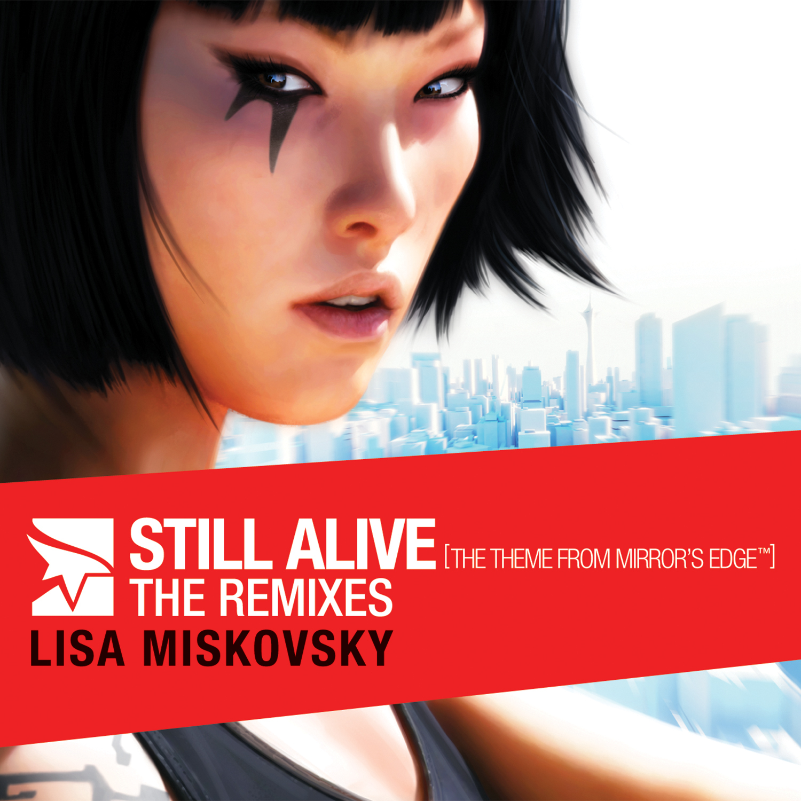

Still Alive - the Remixes [The Theme from Mirror's Edge]

Lisa Miskovsky's Still Alive - the Remixes [The Theme from Mirror's Edge]
irror's Edge is a first-person action game ala yamakasi style
developed by Electronic Arts Digital Illusions CE. The game was
available on both game consoles PlayStation 3 and Xbox 360 last year and
on PC platform on January 19, 2009.
The game events is set in near future of a
totalitarian regime whereby communications are heavily gatekeeping and
monitored. There are a few people who becomes runner to deliver the
goods (bags) to send out information etc while evading government
surveillance (police, soldiers, etc).
The music theme for Mirror's Edge menu was mixed by
Magnus Birgersson (Solar Fields). While the official theme song Still
Alive is sang by Swedish pop-rock singer Lisa Miskovsky. Last year,
Still Alive - the Remixes album was released on November 11, 2008 in
United States with its standard release of 7 track list. However the
North America release comes with 11 tracks while the promotional copy
comes with 6 but longer tracks.
Each of these remixes are somehow sound fit to each of this individual DJ(s). Extremely good suite of these songs.
"
..a remix album for their highly anticipated title Mirrors Edge will be digitally released worldwide on November 11
th in conjunction with the launch of the game. The album features the title track
Still Alive performed by Swedish rock/pop star Lisa Miskovsky
and remixes by some of todays hottest artists including Benny Benassi,
Paul van Dyk, Junkie XL, Teddybears, and Armand Van Helden," said
Electronic Arts.
Standard release
1. "Still Alive (The Theme from Mirror's Edge)" (radio edit) 3:38
2. "Still Alive" (Benny Benassi mix radio edit) 3:42
3. "Still Alive" (Armand Van Helden mix) 5:25
4. "Still Alive" (Paul van Dyk mix short version) 6:48
5. "Still Alive" (Benny Benassi mix) 8:26
6. "Still Alive" (Junkie XL mix) 4:38
7. "Still Alive" (Teddybears mix) 4:37
Total score = 37:14
North American release
1. "Still Alive (The Theme from Mirror's Edge)" (radio edit) 3:38
2. "Still Alive" (Benny Benassi mix radio edit) 3:42
3. "Still Alive" (Paul van Dyk mix radio edit) 3:39
4. "Still Alive" (Armand Van Helden mix) 5:25
5. "Still Alive" (Benny Benassi mix) 8:26
6. "Still Alive" (Junkie XL mix) 4:38
7. "Still Alive" (Teddybears mix) 4:37
8. "Still Alive" (Paul van Dyk mix) 9:34
9. "Still Alive (The Theme from Mirror's Edge)" 4:18
10. "Still Alive" (Paul van Dyk mix short version) 6:48
11. "Still Alive (The Theme from Mirror's Edge)" (US radio edit)3:41
Total score = 58:26
Promotional release
1. "Still Alive (The Theme from Mirror's Edge)" 4:21
2. "Still Alive" (Benny Benassi mix) 8:29
3. "Still Alive" (Junkie XL mix) 4:40
4. "Still Alive" (Paul van Dyk mix) 9:37
5. "Still Alive" (Teddybears mix) 4:40
6. "Still Alive" (Armand Van Helden mix) 5:23
Total score = 37:10
The song "Still Alive" was recorded exclusively for the video game
Mirror's Edge. Miskovsky wrote the lyrics. The song and several
of its remixes have been featured in several previews, first appearing
in a teaser trailer released on 6 May 2008. On November 2008, a music
video was directed by Matthew Stawski and featuring Miskovsky is being
produced for the song in Los Angeles, California.
Lisa Miskovsky's Still Alive MV for Mirror's Edge
RANDOMBOTS 's Music Video Editing for being winner of Machina's Mirror's Edge contest on Youtube
Related source:
Nguyen P, Schachter T, Ekins K 2009, Electronic Arts:
DICE Announces Mirror’s Edge Remix Album Hitting Airwaves This
November, viewed on 2o February 2009, <
http://news.ea.com/portal/site/ea/index.jsp?ndmViewId=news_view&ndmConfigId=1012492&newsId=20081007005420&newsLang=en>
Mirror'sEgdeMusic.com 2009, Still Alive: The Remixes, viewed on 20 February 2009, <
http://www.mirrorsedgemusic.com/>
RANDOMBOTS 2009, Youtube: Other Side, viewed on 20 February 2009, <
http://www.youtube.com/watch?v=3SA8WF1xAq0>
EAFrance 2009, Youtube: Lisa Miskovsky "Still Alive" (Mirror's Edge theme), viewed on 20 February 2009, <
http://www.youtube.com/watch?v=_1xyCOE8fNQ>
Wikipedia 2009, Still Alive - the Remixes, viewed on 20 February 2009, <
http://en.wikipedia.org/wiki/Still_Alive_%E2%80%93_the_Remixes>